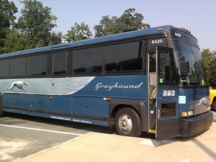

James Armstrong International Airport has over 80 flights per day from all over North America and the world. 3.78 million passengers pass through the airport each
year. Major airlines at the airport are Air Canada, Delta, United Airlines and WestJet, making it easier than ever to visit Winnipeg. The airport receives non-stop flights from
major cities, including Chicago, Denver, Las Vegas and Orlando.
Contact Information
Address: James Armstrong Richardson International Airport,2000 Wellington Avenue, MB R1A 3P9
Despite the cities remoteness, Winnipeg is easily accessible by car. It is approximately one hour north of the North Dakota border. The trans-Canada highway passes through the city,
as it does for most major Canadian cities.
If you are already in Winnipeg and require a car, rental car pick ups are available at most hotels. Cars can also be rented at the airport.
Most major car rental companies are located in Winnipeg.
Bus(regional and local)

The Winnipeg Bus Terminal is located at James Armstrong Richardson International Airport. Many bus companies are located at the terminal, mainly Greyhound Canada,
Beaver Bus Lines and Executive Bus Lines.
The local buses are operated by Winnipeg Transit. It covers 86 routes within the city. A regular fare is $2.65. Bus passes can also be purchased if you plan on using the buses frequently.
Prices for the passes vary.
Contact Information
Address:Winnipeg Transit, 421 Osborne Street ,Winnipeg, MB
Winnipeg is a rail transportation hub due to its central location within Canada. The Canadian, a long distance rail route between Toronto and Vancouver stops at Winnipeg.
This route operates two to three times per week. Via Rail links 450 cities throughout Canada.